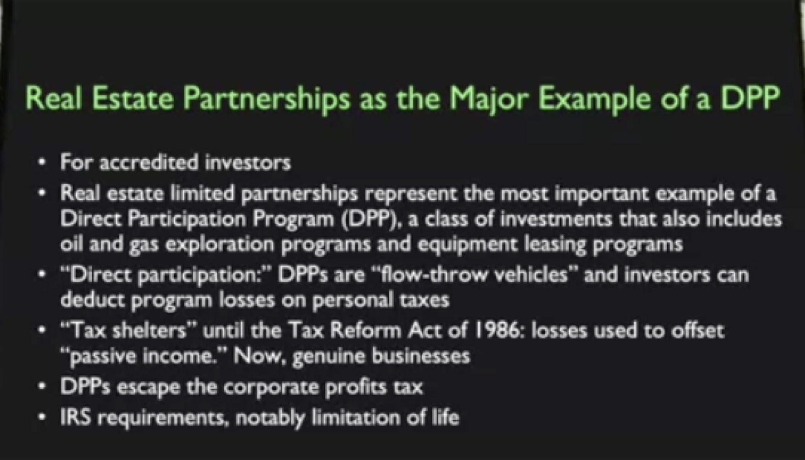
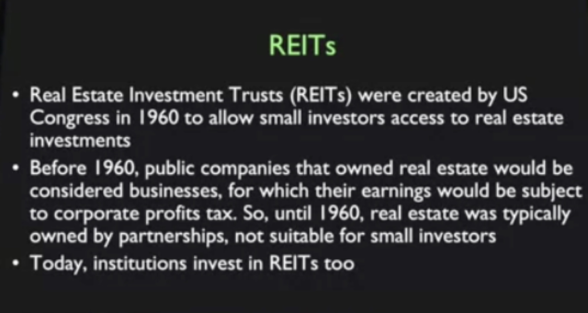
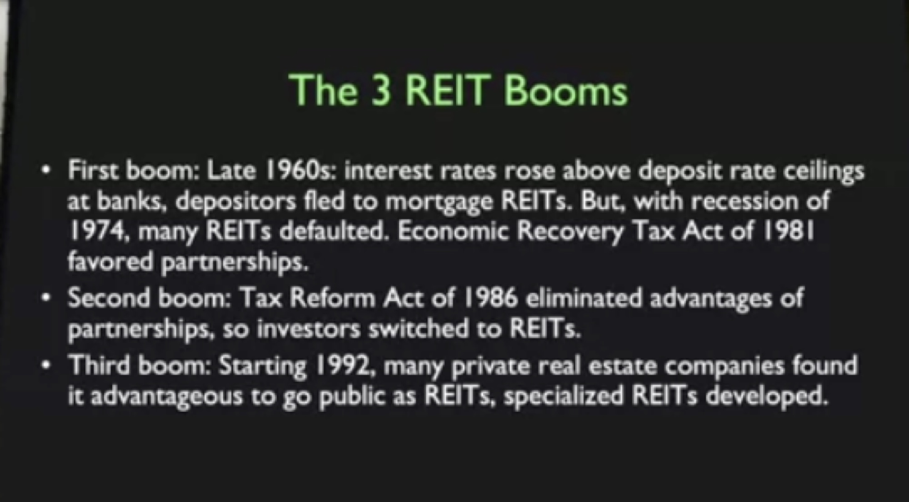
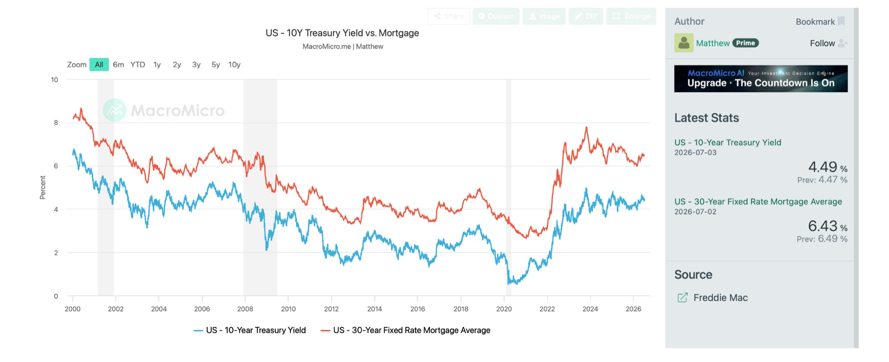
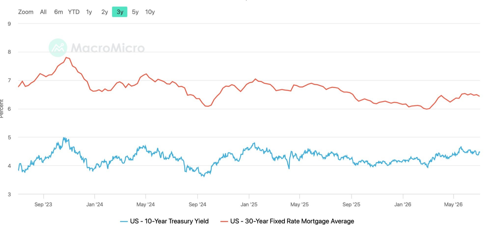
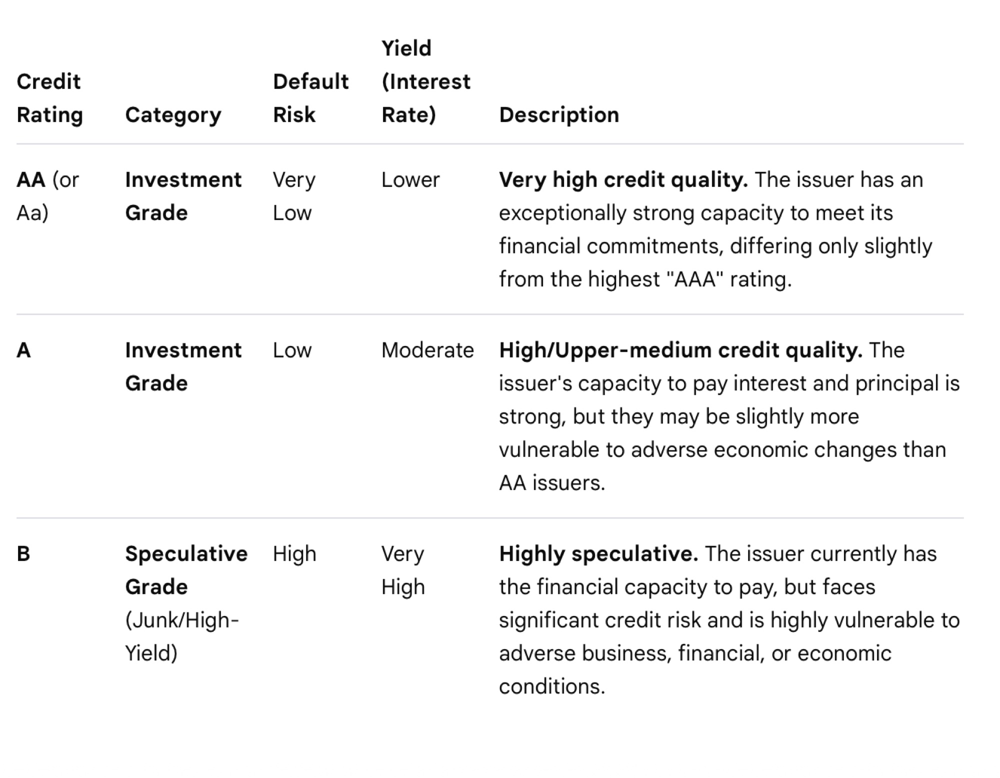
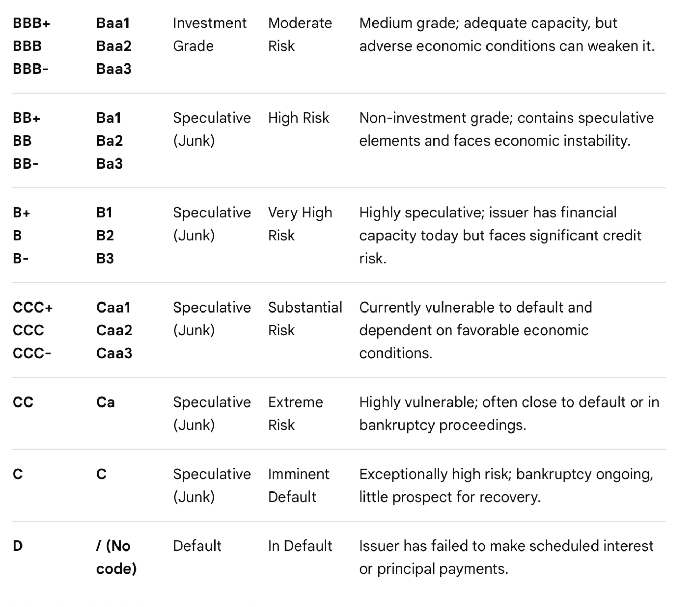
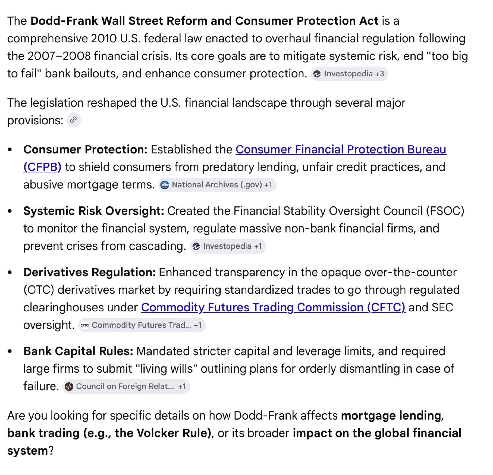
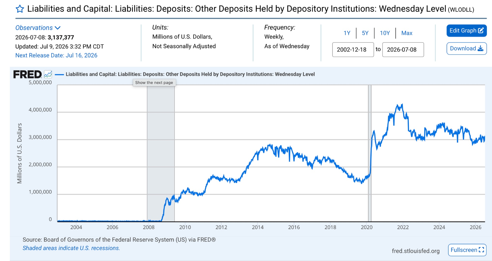

Margin Notes · Note 1
Financial Markets, Module 4
Inverted yield curves: An inverted yield curve is a rare financial phenomenon where short-term debt securities (like two-year Treasury bonds) pay higher interest rates than long-term debt securities (like ten-year Treasury bonds). It is a widely watched indicator because it has historically preceded many economic recessions.
At some point in time, Central banks would shoot up interest rates to deliberately cause recessions in times where inflation was too high; a desperate measure to lower that rate.
Why?
Making borrowing more expensive crushes consumer spending and business investment. This drop in demand stops prices from rising, which brings inflation down but often triggers an economic recession in the process.
Historically, this "shock therapy" (like the aggressive hikes by the U.S. Federal Reserve in the early 1980s) was used to solve "stagflation"—a toxic mix of high inflation and stagnant economic growth.
According to Robert Shiller: The market is the biggest indicator to predict inflation.
Mortgage Lending
The word mortgage comes from (Latin) Mortuus vadium (dead pledge)
Definition of “mortgage”: commit property as collateral for a loan.
- “mortgage” became common in the late 18th century, as part of the democratization of finance
- Property law was not so developed as to allow a lively mortgage industry
- Grundbuch invented in Germany that gave it a clear title, late 19th century.
Definition of “Grundbuch”: The Grundbuch (often translated as the land register or property register) is a public legal record used in Germany, Austria, and Switzerland. It officially documents property ownership, boundary information, and any encumbrances like mortgages, rights-of-way, or usage restrictions tied to a specific parcel of land.
Commercial Real Estate Vehicles


Limited Partnership Structure
General partner runs the business, does not have limited liability
General partner must own at least 1%
Limited Partners are passive investors, with limited liability, rights to vote, can replace a General partner
Give additional performance-oriented compensation to the General partner
Definition of general and limited partners
A General Partner (GP) manages the day-to-day operations of a business or fund and bears unlimited personal liability for its debts. A Limited Partner (LP) is a passive, financial investor whose liability is capped at the amount they invest, provided they do not participate in management.
(see https://www.delawareinc.com/blog/general-partnership-vs-limited-partnership/)
What are REITs?




Size of Mortgages USA
- 13.2 trillion dollar household liabilities (as of 2016)
- Currently at 20 trillion USD
- 48 million mortgaged homes
- 10.9 million of these mortgages were under water after the financial crisis when home prices bottomed in 2012
Note: An underwater mortgage means a homeowner owes the bank more on their mortgage loan than the actual market value of the house.
- In the 1920s, 5Y term loans were common, balloon payment due in 5 years, or refinance or sell house.
- In the 1930s, decline in nominal home prices and rise in unemployment caused massive defaults.
- The mortgage lending industry turned to long-term annuities.
Federal Housing Administration
- Began in 1934
- Required 15Y loans
- Insured the lender against losses
- GOV is betting on its own people
- Recently, FHA is in trouble
- Raised insurance premium from 0.5% to 1.5% which is killing real estate.




Yield to maturity (YTM) is the total estimated annual return an investor will earn if a bond is bought at the current market price and held until it matures. It factors in the bond's face value, coupon interest payments, time to maturity, and any capital gains or losses.
Mortgage rates are higher (30y) than 10Y treasury bonds because there are overhead costs to mortgages, Bonds are more stable.
Types of mortgages
- fixed rate (long term)
- ARM (adjustable rate)
- Price level adjusted mortgages (PLAM) which adjust to inflation so constant in real terms
- Dual rate (same as PLAM but interest rate floats) called DRAMs
- Shared appreciation mortgages (SAMs)
- First mortgages: on purchase of home
- Home equity loans
A floating interest rate (or variable rate) is an interest rate on a loan, bond, or mortgage that fluctuates over time. It typically follows a benchmark index (like SOFR or Euribor) plus a fixed percentage spread, adjusting periodically to reflect current financial market conditions.
An index rate is a benchmark interest rate that lenders use to set the variable interest rates on loans, such as adjustable-rate mortgages (ARMs) or credit cards. Rather than staying fixed, the loan's actual interest rate fluctuates alongside the index rate, causing your monthly payments to rise or fall depending on market conditions.
DRAM
Initially, total interest rate only takes in mind the SOFR (Secured Overnight Financing Rate) and a very high introductory discount in order to make the mortgage more attractive to borrowers. As months pass, the introductory discount fades and the margin rate (tends to range between 2-3.5%) is charged including the floating interest rate, which can drastically fluctuate based on the current economic situation.
The global economic uncertainty trade policy index has had an average of 122.58 from Jan 2025 up to Apr 2024. The largest peak up to Apr 2024 was about 2,000 but in Apr 2025, the index shot up to 8,000.
DIFFERENCE BETWEEN PLAMs AND DRAMs:
PLAMs have fixed interest rates that do not vary, but the monthly payment varies on either inflation or a benchmark like the SOFR. A DRAM would have that too but the interest rate is not fixed.
SAMs (Shared Appreciation Mortgages)
A SAM is a mortgage that allows you to get zero or low interest rates below market share in condition that the lender gets a share of the home’s equity value upon selling it.
Home equity loans: allows you to borrow against the portion of your property you own outright - it is a second mortgage that allows you to have a large sum of money because your current home is collateral.
PMIs (private mortgage insurance): type of insurance that conventional mortgage lenders require from borrowers who put a down payment of less than 20% of a property’s purchase price. It allows you to buy a home sooner.
Collateralized Mortgage Obligations (CMOs)
They divide the cash flow of a mortgage pass-through security into a number of tranches in terms of prepayment risk.
Sequential-pay CMOs (1983): First tranche receives first principal payments after it is paid off the second tranche receives principal payments.




CDOs (Collateralized Debt Obligations):
- Hold securities, typically mortgage securities as their assets
- Typically hold subprime mortgages
- CDOs divide the cash flow into a number of tranches in terms of default risk
- CDO debt crisis of 2007
- Criticism of rating agencies for not downgrading them.
5% mortgage originator must hold 5% of mortgages
Dodd-Frank copied this idea
Qualifying Residential Mortgages (QRMs) are exempt from requirement in USA
A Qualified Mortgage (QM) is a home loan meeting specific standards set by the Consumer Financial Protection Bureau (CFPB) under the Dodd-Frank Act. It limits risky loan features like interest-only periods or balloon payments, caps lender fees at 3%, and generally restricts the debt-to-income (DTI) ratio to 43%.


Requirements for a QRM
- Regular substantially equal payments
- No negative amortization (whenever the loan payment for any period is less than the interest charged over that period so that the outstanding balance of the loan increases.)
- Maximum loan term of 30Y
- Total points and fees that do not exceed 3% of total loan amount or specified quantities for small loans up to 100,000
- payments underwritten using maximum interest rate that may apply during the first five years after the date on which the first regular periodic payment is due, there is consideration and verification of the consumer’s income and assets, including employment status and current debt obligations as well as a total DTI (no debt larger 43% larger than lender income) that does not exceed 43%.
- No payment at the end, no balloon payment.
RESERVE REQUIREMENTS
- Banks have reserve requirements that the government imposes on them in order to have enough money to cover any liability and investor problem.
- Yet there are also “excess reserves” which are the reserves held by banks that are above the minimum threshold. (ended in 2013)


Micro and Macroprudential: Regulation to help prevent a crisis
Microprudential was the main concern before 2007-2008
Tunneling: Expropriation (states or authorities taking property from an owner for public use or benefit) by minority shareholders - fraud committed by a board
Directors’ duties to prevent tunneling
Duty of Care: Act as a reasonable, prudent and rational person
Duty of loyalty: preventing insiders from benefitting at expense of shareholders
Interlocking directorate: Common board members across firms to enhance coordination
Forms of law
Common law: mainly judicial action
Civil law: mainly from laws or acts written by legislators.
Text of Buttonwood Agreement (first stock exchange of America: now the NYSE)
William Duer: former New York state senator who borrowed heavily to heavily invest into volatile markets; infamously finding the money by manipulating and deceiving others.
The crash of 1792 created macroprudential concerns.
“May Day” 1975: Day that the SEC removed fixed commission on mortgages
Big Bang London Oct 27, ‘86: Thatcher’s abolishment on fixed commissions
Deutsche Boerse
- attempted to buy NYSE and Nasdaq in 2010, Intercontinental Exchange bought NYSE and Nasdaq stayed independent
- Tried to buy LSE for 31bn USD but failed because of the European Commission
Blue Sky Laws
- Regulates the offering and sales of securities to protect the public from fraud - regulates brokers and advisors
- Requires registration of securities
- Enacted in Kansas 1911 at the urging of its banking commissioner Joseph Norman Dolley and served as a model for similar statutes in other states
- Between 1911 and 1933, 47 states adopted blue-sky statutes
SEC formed under Roosevelt’s New Deal in 1934
- Initially viewed by businesses as radical and almost socialist.
- EDGAR - name of financial statements platform
Public vs Private Securities:
- Public securities undergo approved process of issuance under SEC surveillance
- Public companies must file public statements
- IPO is an SEC procedure for going public
- Companies can still go private once they are public, but they usually don’t
Type of hedge funds:
- 3(c)(1)s: Private investment vehicles that do not need to register with the SEC as long as they have 100 or less total investors, the investors must be “accredited” which means that they have an income of 200,000 or investable assets of 1,000,000,000 (which the SEC tried to raise up to 2.5m in 2006 but it didn’t happen)
- 3(c)(7)s: which can take up to 500 investors but they must be “qualified purchasers” as defined by the SEC, individuals with a net worth of at least 5m USD or institutions with a net worth of at least 25m USD
Insiders vs Outsiders
- Insiders: people with special access to information about a company
- Inside information in a company represents wealth
- the SEC tries to define access to this wealth by disclosing laws:
- Regulation FD (Full Disclosure) 2000: requires that when a company tells any material fact to an analyst, it must immediately tell the public.
- Germany didn’t have laws against insider trading until 1994 (and even then they mainly did it out of pressure from the
- Some argue that insider trading is good, e.g. Hayne Leland (quite an irrelevant guy but still served on several boards notably the American Finance Association)
Example of market surveillance: May 1995, IBM’s acquisition of Lotus Development
FASB (Financial Accounting Standards Board)
SEC recognized the FASB as authoritative, though the SEC can still make accounting standards, it prefers that the financial sector does it.
GAAP (Generally Accepted Accounting Principles)
FASB defines GAAP which is used for EDGAR (not the brawl stars character), note that EDGAR (still isn't) is the platform used to gather electronic filings from companies, completely accessible to the public.
Although the FASB is not a government branch, it is a nonprofit in the financial sector.
Goodbody & Co
- Founded in 1886 by an Irish stockbroker and law student (at Trinity College, who decided not to take the bar and pursue finance) after the demise of Goodbody, Glynn and Dow (founder of Dow Jones and Wall Street Journal), which initially started when Robert Goodbody came to New York from Dublin and wanted to trade stocks but the NYSE (New York Stock Exchange) only accepted seats (which you had to purchase in order to invest in the NYSE floor, which was good because that meant you traded directly without having to pay a middleman) to American citizens, so Goodbody had to partner with Charles Dow (a US citizen) in order to get their name on the exchange floor, their partnership dissolved because Robert got his citizenship in 1891 and Dow wanted to follow his passion: financial journalism.
- In 1970, Goodbody & Co (previously Glynn and Dow) was a top 5 (at the time) brokerage firm with only 225,000 clients (yes, even with 225k clients, Wall Street was that small and concentrated at the time…)
- Goodbody & Co failed and ran into financial difficulties, it had troubles maintaining SEC capital requirements.
- It was a private company (not on the stock market)
- At request of NYSE, Merrill Lynch took over the company.
- Why the NYSE? The NYSE was afraid that a domino effect would occur from their failure and make a major impact on the entire American economy.
- Why Merrill Lynch, and what authority “ordered” them? The chairman of the NYSE board of directors knew that no other firm substantially had enough capital to afford taking over Goodbody & Co, thus they turned to Merrill Lynch as their “only hope”.
- To sweeten the deal (as if it wasn't already as bitter as it could get), the NYSE pledged $30 million to cover the losses that Merrill might incur throughout the deal. No Goodbody client lost money.
Epilogue of the Goodbody collapse
In order to avoid this kind of event in the future, the SIPC (Securities Investor Protection Corporation) was created by the US Congress (1970).
The SIPC protects consumers of brokerage firms against failures up to 500,000 per account and 100,000 for cash.
- Very much criticized because legal and administrative fees make up a vast majority of payments allocated from recovery funds. Robert Shiller even said “So defensive it pays more to the lawyers than to the claimants”
- It also doesn't cover fraud claims
- It is extremely slow to pay, but the SIPC still holds $5bn in treasury funds (well it’s a target but they’ve managed to maintain it) and a line of credit worth $2.5bn.
Large things the Dodd-Frank Act of 2010 made:
- Financial Stability Oversight Council
- Bureau of Consumer Financial Protection
Similarly, the EU made a framework of their own (in 2010):
- European Systemic Risk Board (ESRB) based in Frankfurt
- European Banking Authority (EBA) London
- European Securities Markets Authority (ESMA) Paris
- European Insurance and Occupational Pension Authority (EIOPA) Frankfurt
Bank for International Settlements
- Created in 1930 by Hague Agreements (those agreements were simply a registration system where you submit one form in one language in order to save money)
- 57 member central banks who are national regulators
- It is located in Basel Switzerland
- Shifted focus on Central Bank cooperation post WW1
- Designed for financial stability and fund management
Financial Stability Board
- Created by G20 on April 2009 from the former Financial Stability Forum (which was founded in 1999 by the G7 countries)
- It makes recommendations to those G7 countries which may be adopted in many countries
- Operates in Basel, Switzerland.
Sources
- Lecture slides: Robert Shiller, Financial Markets, Yale University.
- Deposits chart: Board of Governors of the Federal Reserve System, via FRED.
- Treasury and mortgage charts: MacroMicro, with data from Freddie Mac.